Thelio Mira (Parts & Repairs)
Many components in your Thelio Mira can be upgraded or replaced as necessary. Power the machine off, switch off the power supply, and unplug all peripherals before working with any internal components. Then, follow these step-by-step guides for instructions:
- Removing the top case
- Adding/removing 2.5" storage drives
- Replacing a GPU
- Replacing the M.2 drives
- Removing the CPU duct
- Replacing the RAM
- Replacing the CPU fans
- Replacing the CPU cooler/thermal paste and CPU
- Replacing the power supply
- Replacing the bottom case fan
- Replacing the Thelio-IO board
- Troubleshooting the power button
- Troubleshooting the Thelio-IO USB connection
Removing the top case:
The top case can be removed to access the internal components.
Tools required: Cross-head (Phillips) screwdriver (optional)
Time estimate: 2 minutes
Difficulty: Easy ●
Steps to remove the top case:
- Remove the eight outer screws holding the top case onto the machine.
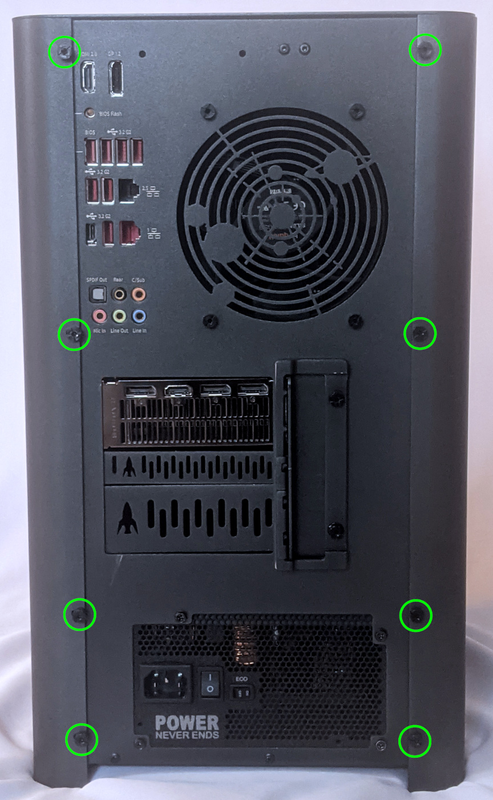
- Slide the top case up and off of the machine.
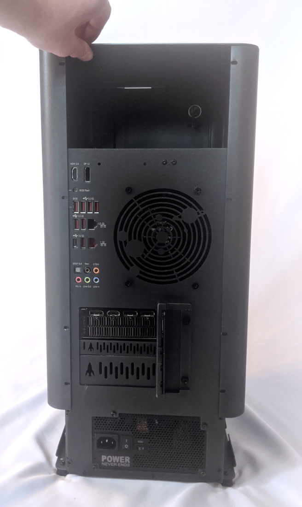
Adding/removing 2.5" storage drives:
Thelio Mira r1.0 supports up to four 2.5" SATA III drives.
Tools required: Cross-head (Phillips) screwdriver (optional)
Time estimate: 10 minutes
Difficulty: Easy ●
Steps to add/remove 2.5" storage drives:
- Follow the steps above to remove the top case.
- If you are adding a new drive, pop out the black plastic ring on the top crossbar and remove four screws (per drive).

- Insert four screws into each 2.5" storage drive you wish to install.
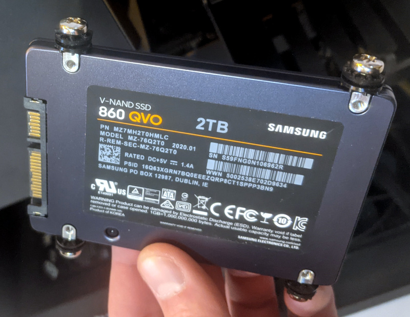
- Unscrew the two screws securing the drive bay's cover.
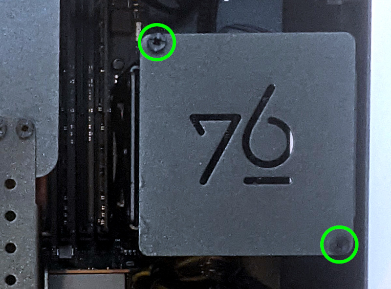
- Slide each 2.5" drive into one of the slots leading to the Thelio-IO board.
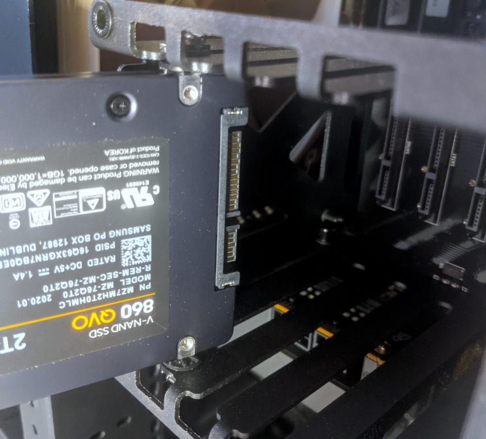
Replacing a GPU:
Depending on which power supply is installed, Thelio Mira supports up to two 3-slot thick GPUs. There are three PCIe 4.0 x16 slots; however, the bottom slot only has room for a 1-slot thick card, and is only accessible if the second slot does not have a 3-slot thick card installed. The top two slots can accommodate cards as wide as 3-slots. An even thicker GPU can be installed in the top slot if only a single GPU is being used. Mixing NVIDIA and AMD GPUs is not recommended.
Tools required: Cross-head (Phillips) screwdriver
Time estimate: 15 minutes
Difficulty: Easy ●
Steps to replace a GPU:
- Follow the steps above to remove the top case.
- Unscrew the two back screws holding the PCIe bracket in place, then slide the PCIe bracket open.
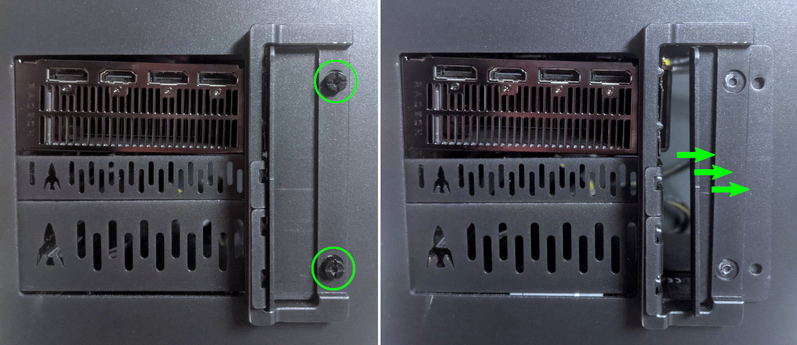
- Unscrew the four screws holding the side GPU brace in place and remove the brace.
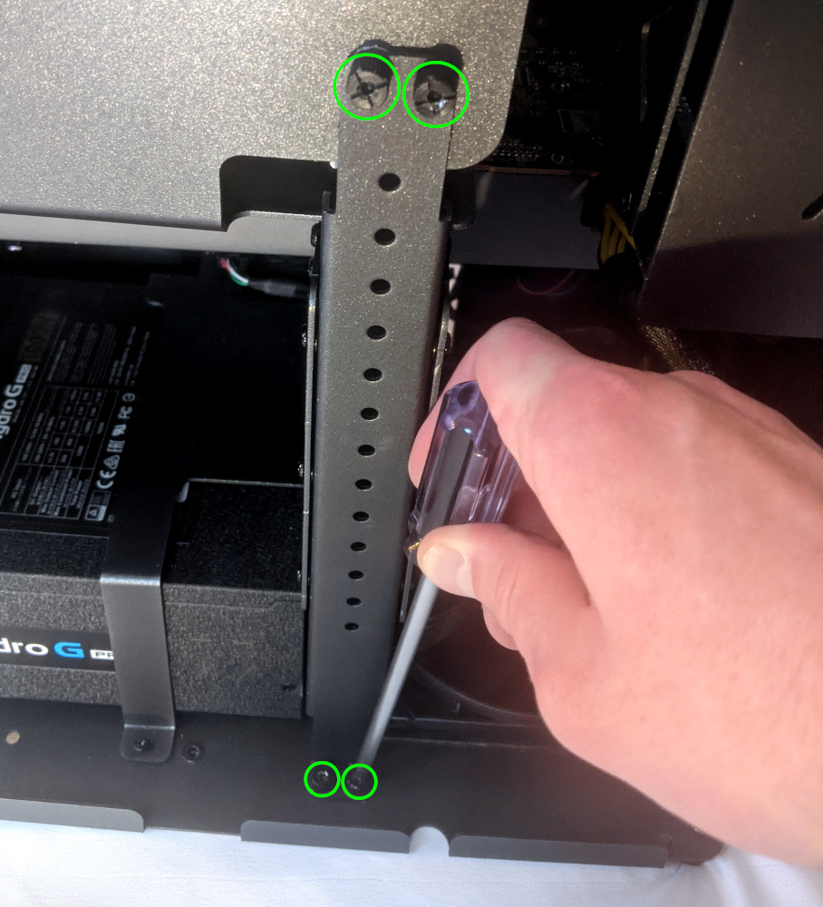

- If you're removing a GPU, unplug the GPU power cable from the right side of the card. Hold down the latch on the connector while unplugging the cable.
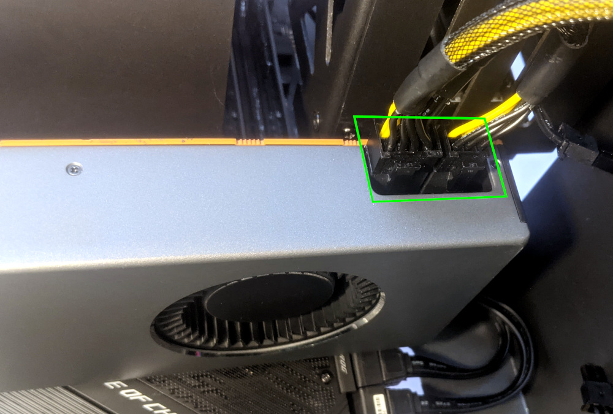
- Hold the latch on the motherboard to free the PCIe connection, then pull the card out of the slot.
- If removing a GPU in the bottom slot, it may be necessary to remove the GPU in the top slot first in order to reach the bottom slot's latch.
- If space is tight, a long object such as a screwdriver can be used to press the latch.
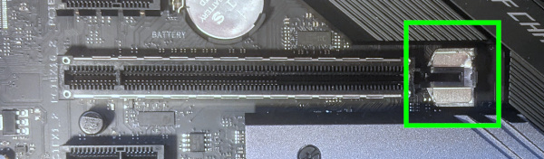
- After inserting the new GPU into its slot, connect the power cables.
- If you are using only one GPU, it should go in the top PCIe slot.
- If your Mira was originally equipped with fewer than 2 GPUs, power cables for two GPUs will still be preinstalled in your system. If they were not being used, they will be bundled up using velcro cable keepers to keep them out of the way.
- Once all GPUs are installed, replace the GPU brace, back PCIe bracket, any PCI slot covers for empty slots, and finally the top case.
- The GPU brace includes plastic pieces which are adjusted to the GPUs that originally shipped with the system. The brace is highly adjustable and should be able to accommodate many different GPU shapes and sizes.
The GPU brace's primary function is to prevent damage during shipping. The system can be run without the brace if it doesn't fit an upgraded card; the back PCIe bracket provides primary support for the GPUs.
Replacing the M.2 drives:
Thelio Mira has two M.2 slots, which support PCIe NVMe Gen 4 x4, PCIe NVMe Gen 3 x4, or SATA III. Both slots support drive sizes 22110, 2280, 2260, and 2242.
Tools required: Cross-head (Phillips) screwdriver
Time estimate: 23 minutes
Difficulty: Medium ●
Steps to replace the M.2 drives:
- Follow the steps above to remove the top case and remove the GPU brace and GPUs.
- Remove the two screws securing the M.2 fan cover and remove the fan cover.
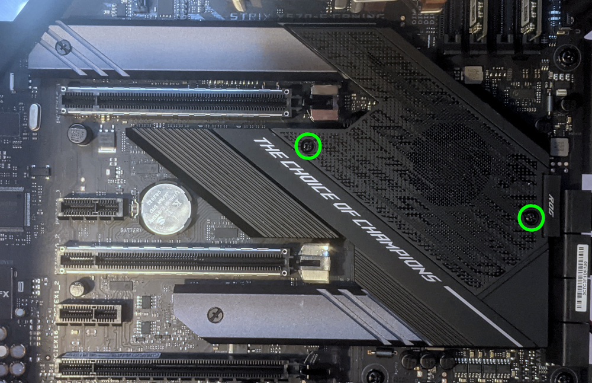
- Remove the two screws securing the heatsink covering the slot you wish to access and remove the heatsink.
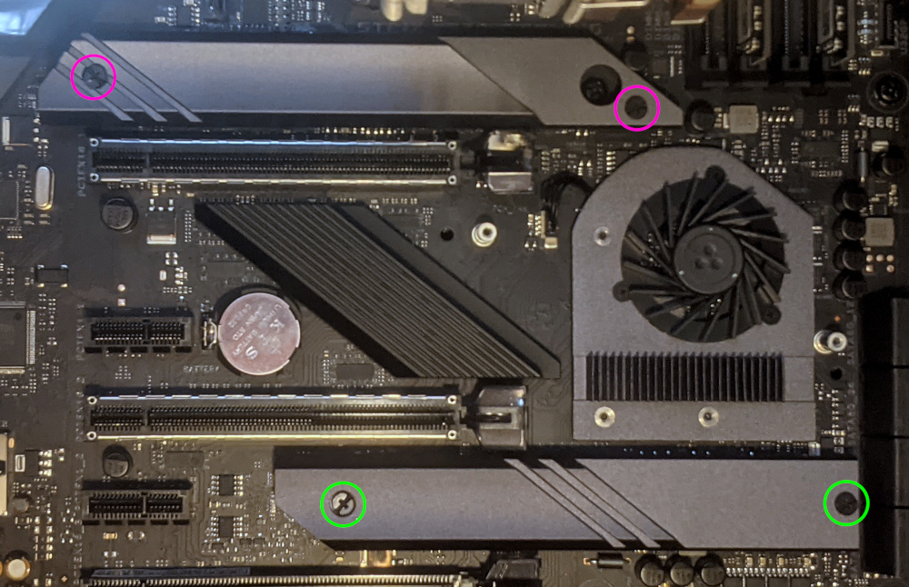
If there is already a drive in the slot you are accessing, it may take some pressure to remove the heatsink and thermal tape from the M.2 drive. Pull slowly to avoid breaking the thermal tape.
- Unscrew the retainer screw opposite the M.2 slot.
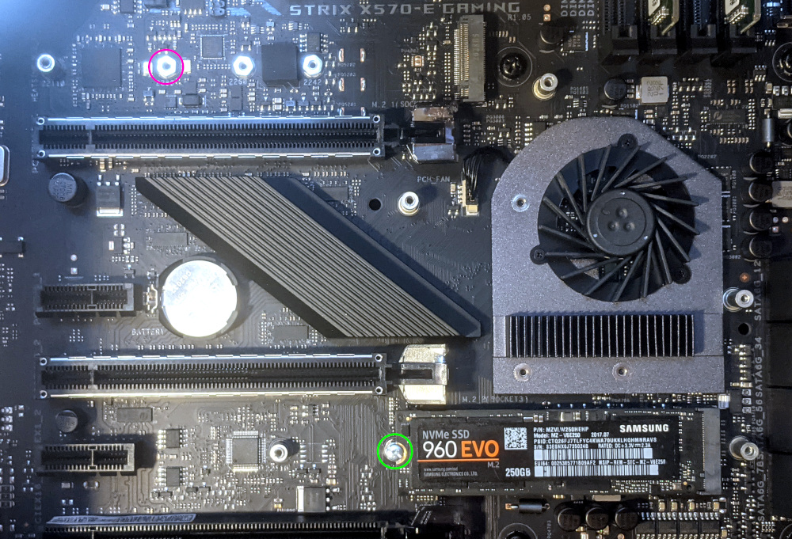
- Remove the existing M.2 drive by pulling it out of the slot.
- Insert the new M.2 drive into the slot and hold it in place.
- Replace the retainer screw.
- If utilizing a slot for the first time, peel the plastic backing off of the heatsink to expose the double-sided thermal tape for that slot.
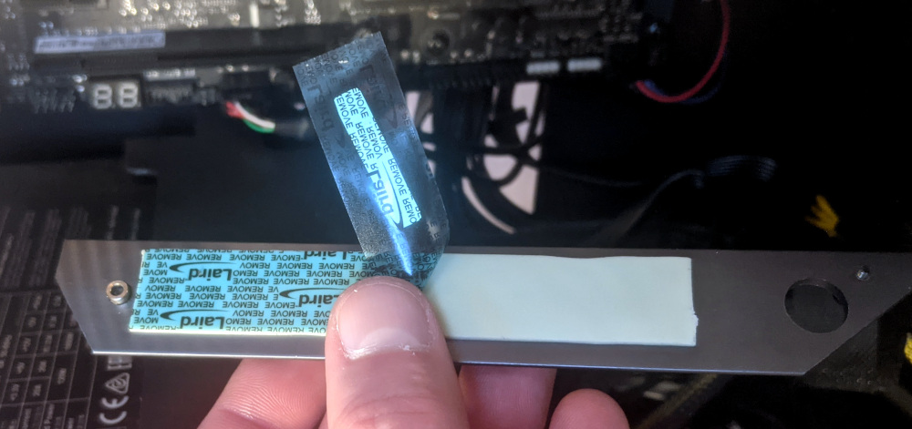
- Replace the M.2 heatsinks, M.2 fan cover, GPUs, GPU brace, and top case.
Replacing the RAM:
Thelio Mega r1.0 supports up to 128GB (4x32GB) of RAM. The RAM sticks are Unregistered/Unbuffered ECC DDR4 DIMMs running at a speed of 3200MHz. If you've purchased new RAM, need to replace your RAM, or are reseating your RAM, follow these steps.
Tools required: Cross-head (Phillips) screwdriver (optional)
Time estimate: 20 minutes
Difficulty: Medium ●
Steps to replace the RAM:
- Follow the steps above to remove the top case.
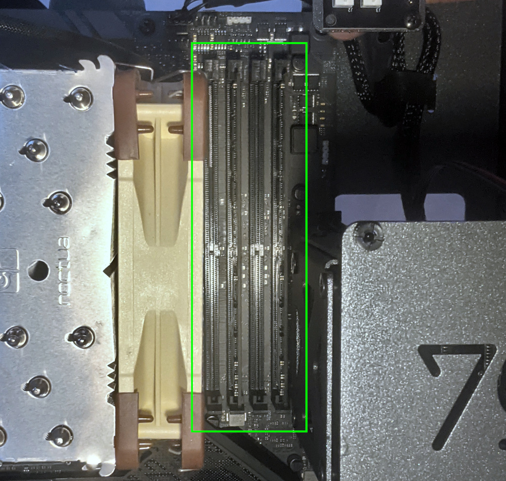
The CPU duct has been removed for better visibility in the above photo; removing the CPU duct is not required to access the RAM slots.
- To remove an existing RAM stick, flip the top latch up away from the stick, then pull the stick out of the slot, starting from the top edge. (The bottom of the RAM slot does not move.)

- Make sure the latch on the top of the slot is open (pulled upwards), then insert the new RAM (or re-seat the existing RAM) into the slot.
- The RAM stick will only fit in one direction. The larger group of pins goes on top.
- Use the following guide for placement of the RAM sticks:
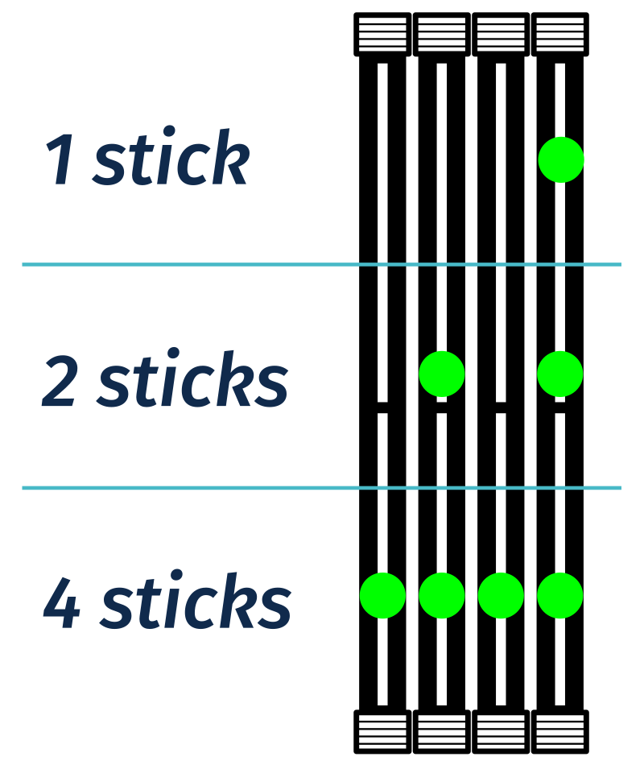
- Replace the top case.
Removing the CPU duct:
The CPU duct guides airflow through the CPU cooler.
Tools required: Cross-head (Phillips) screwdriver (optional)
Time estimate: 7 minutes
Difficulty: Easy ●
Steps to remove the CPU duct:
- Follow the steps above to remove the top case and remove the GPU brace.
- Unplug the connector for the CPU duct-mounted fan.
- Both fan connectors can be unplugged if it is difficult to tell which plug is for which fan.

- Unscrew the four back screws holding the CPU duct in place.

- Pull the CPU duct away from the machine.
Replacing the CPU fans:
Thelio Mira contains two CPU fans. One is mounted on the CPU duct, and one is mounted on the cooler.
Tools required: Cross-head (Phillips) screwdriver
Time estimate: 15 minutes
Difficulty: Medium ●
Steps to replace the duct-mounted CPU fan:
- Follow the steps above to remove the top case, remove the GPU brace, and remove the CPU duct.
- To remove the CPU duct fan, unscrew the four fan screws inside the duct.
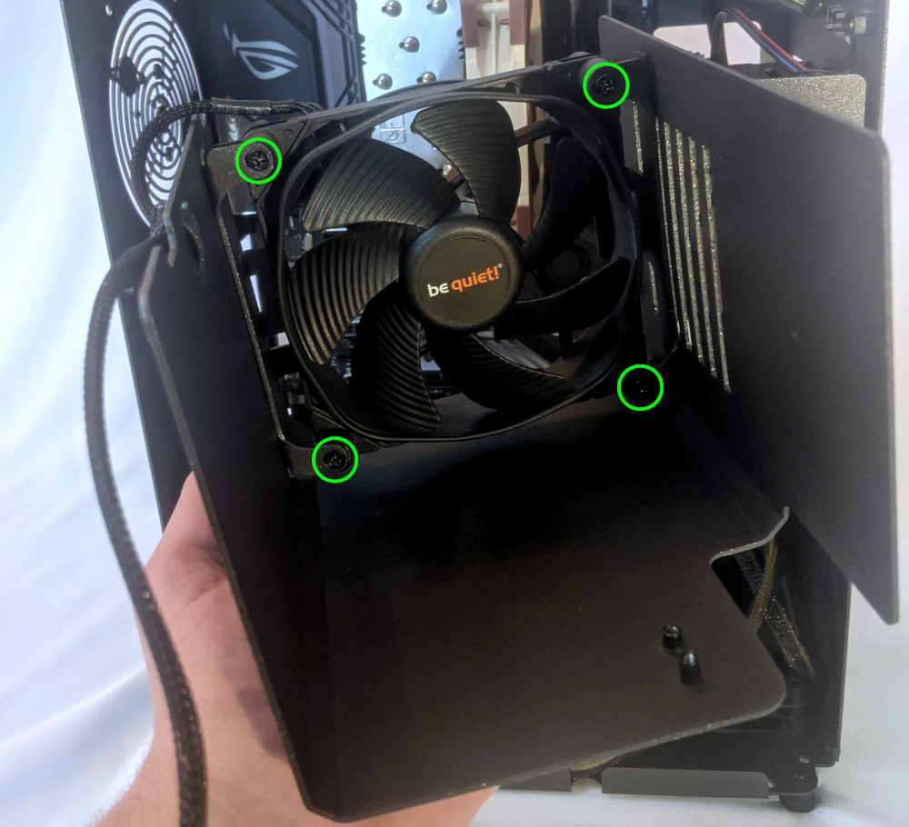
- Free the cable from the cable keeper, then remove the fan.
Steps to replace the cooler-mounted CPU fan:
- Follow the steps above to remove the top case, remove the GPU brace, and remove the CPU duct.
- Pull the center loop of the fan clip to remove it from the CPU cooler.

- Repeat the process for the bottom clip, then remove the fan from the CPU cooler.
- Unplug the fan from the CPU fan power board (if it wasn't already unplugged when the CPU duct was removed).
- When reinstalling the CPU fans, both fans should be oriented so the side with the non-spinning cover faces the back of the machine, while the spinning side faces the front of the machine.
Replacing the CPU cooler and CPU:
The CPU cooler dissipates heat from the CPU to the heatsink, where the CPU fans expel it from the system. Depending on your climate and the age of the machine, replacing the thermal paste between the CPU and the cooler/heatsink may help the system run cooler.
The CPU uses an AMD AM4 socket.
Tools required: Cross-head (Phillips) screwdriver, thermal paste
Time estimate: 35 minutes
Difficulty: High ●
Steps to remove the CPU cooler/thermal paste:
- Follow the steps above to remove the top case, remove the GPU brace and GPUs, remove the CPU duct, and remove the cooler-mounted CPU fan.
- While holding the CPU cooler in place so it doesn't fall, unscrew the two CPU cooler mounting screws. The cooler brackets are under spring tension, so it's best to loosen each side a little at a time.

- The cooler will come away from the CPU.
- Using a paper towel, clean the existing thermal paste off of the heatsink and CPU. You may also use a small amount of rubbing alcohol if the old paste is dried or difficult to remove.
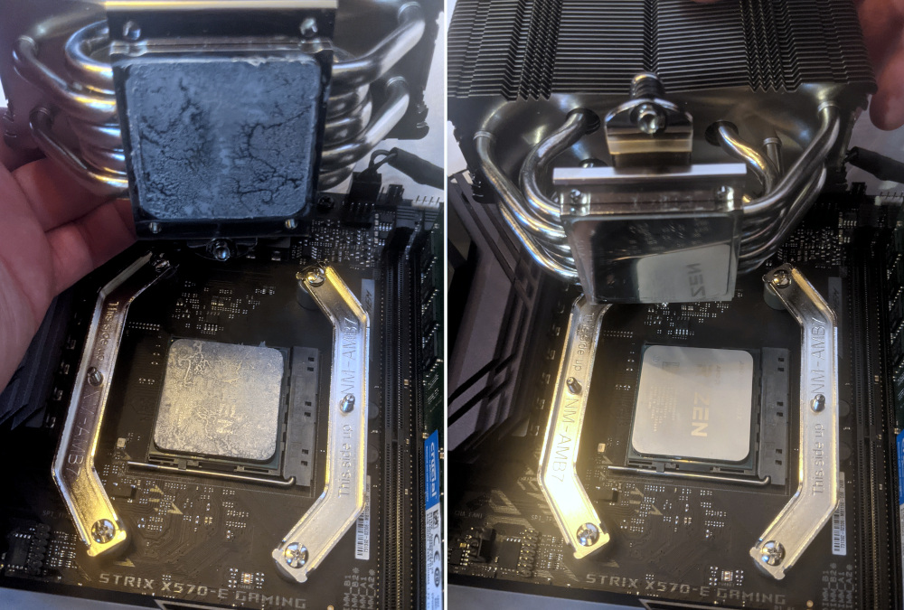
Steps to replace the CPU:
- Flip the CPU locking lever up to unlock the CPU socket.

- Carefully lift the CPU straight out of the socket.
- Caution: The CPU has hundreds of tiny, delicate pins on the bottom side, so be very careful not to bend any of them while uninstalling, handling, or installing the CPU.

- The top left corner on the CPU socket has a triange indicator to mark the direction the CPU should be oriented. Using this as a guide, carefully place the new CPU into the socket, matching the triangle on the CPU with the triangle on the motherboard.
- Lower the CPU locking lever back down into the locked position.
Steps to install the thermal paste/CPU cooler:
- Place a small blob of thermal paste onto the CPU.

- Place the CPU cooler over the CPU, aligning the two screws on the CPU cooler with the studs on the mounting brackets, and tighten the screws.
- To distribute the thermal paste evenly across the CPU, tighten each screw a little bit at a time.
- Reinstall the cooler-mounted CPU fan, CPU duct, GPUs, GPU bracket, and top case.
Replacing the power supply:
Your Thelio Mira is equipped with one of three different power supplies. All three power supply units (PSUs) are modular and can be replaced with another unit of the same model. Different models may not be compatible with the cabling pre-installed in the Thelio Mira.
Note: The PSU shown in these photos is not a model that Thelio Mira is being equipped with at the time of writing these instructions. Be sure to confirm which PSU model your machine has before seeking a replacement.
Tools required: Cross-head (Phillips) screwdriver
Time estimate: 30 minutes
Difficulty: High ●
Steps to replace the power supply:
- Follow the steps above to remove the top case and remove the GPU brace.
- Unplug all of the modular cabling from the back of the PSU.
- Some of the cables may be easier to unplug after the PSU has been unscrewed/removed from the case.

- Unscrew the PSU bracket from the reverse side of the case.

- Unscrew the PSU bracket from the bottom of the case.

- Remove the PSU bracket.
- Unscrew the four screws holding the PSU in from the back of the case.
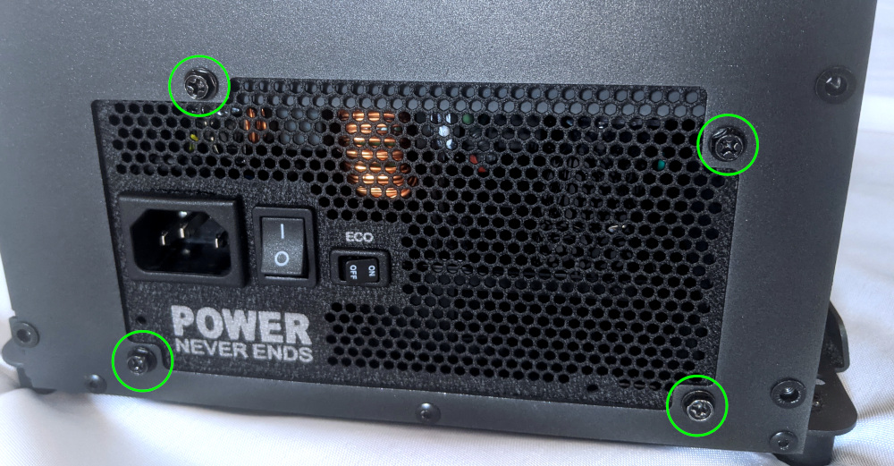
- Remove/replace the PSU. Set the replacement PSU on top of the rubber post that holds it at the correct height.
- The replacement PSU should be installed with the fan facing the bottom of the case.
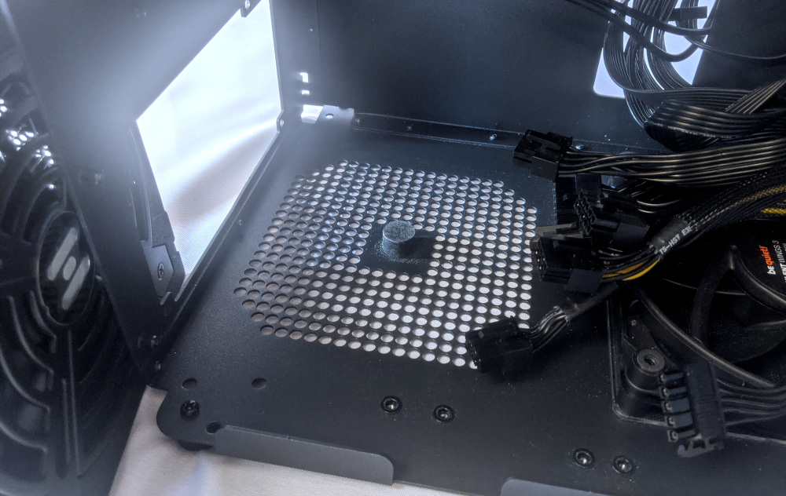
- After screwing in the replacement PSU and replacing the PSU bracket, use the labels and pin counts on the cables and ports to ensure the power cables are reconnected in the proper locations.
- Remember that not all of the available connectors will plug into the PSU-- four connectors (on two cables) are to be plugged into the GPUs.
- If the replacement PSU has an "ECO Mode" switch, make sure it is switched on.

Replacing the bottom case fan:
Thelio Mira r1.0 has one intake fan mounted in the bottom of the case.
Tools required: Cross-head (Phillips) screwdriver
Time estimate: 15 minutes
Difficulty: Medium ●
Steps to replace the bottom case fan:
- Follow the steps above to remove the top case.
- Disconnect the fan's cable from the Thelio-IO daughterboard and remove the cable from the cable keeper bundles. The fan connector can be accessed through the cutout in the front of the chassis.

- Unscrew the four fan screws from the bottom of the machine, then remove the fan from the case. The chassis can be laid on its back to make it easier to access these screws.
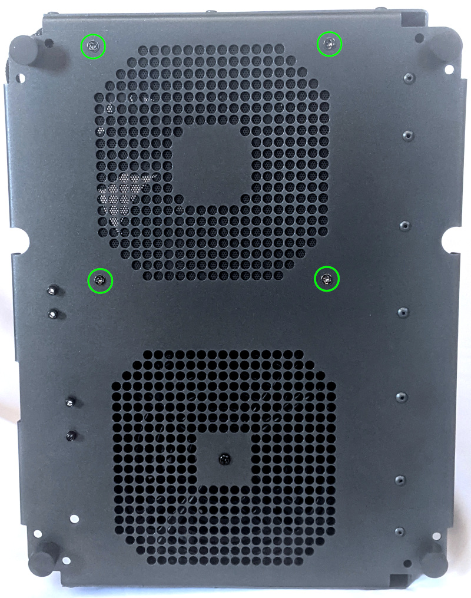
- The components should be mounted to the chassis in the following order:
- Dust filter
- Acrylic spacer
- Fan
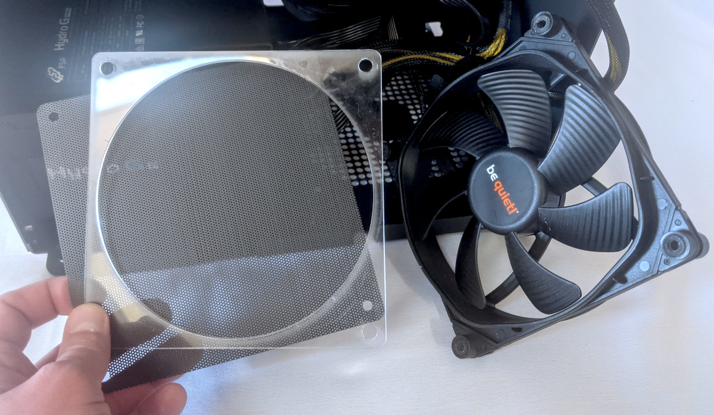
Replacing the Thelio-IO board:
The Thelio-IO board handles the front power button, fan control, and 2.5" SATA connectors for the system. If the Thelio-IO board becomes defective, it can be replaced using the instructions below.
Tools required: Cross-head (Phillips) screwdriver
Time estimate: 15 minutes
Difficulty: High ●
Steps to replace the Thelio-IO board:
- Follow the steps above to remove the top case and remove the front cover and any installed drives from the 2.5" drive bays.
- Use the cutout on the front side of the chassis to unplug all cabling from the Thelio-IO board that is being replaced, including the SATA cables.
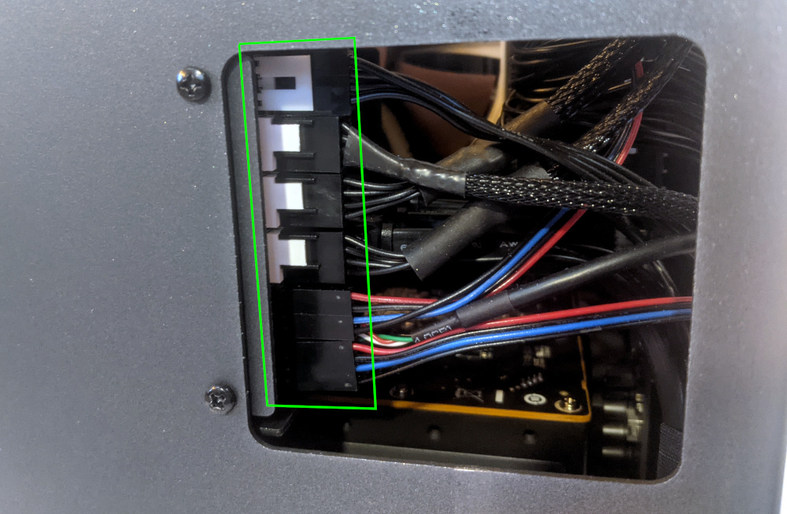

- Unscrew the four screws on the front of the chassis that secure the 2.5" drive cage and remove it from the chassis. Hold the drive cage when removing the final screw to keep it from falling.
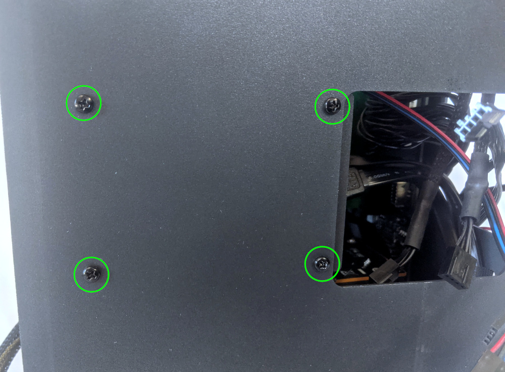
- Remove four screws on either side of the drive cage to free the Thelio-IO board from the cage.

- Place the new Thelio-IO board into the drive cage, reassemble the drive cage, mount the drive cage back into the chassis, and replace all cables. Below are references for the correct cable orientations:

Troubleshooting the power button:
If the front power button doesn't power the machine on or doesn't light up when the system is powered on, try the following troubleshooting steps:
- Ensure the system powers on normally using the internal power button.
- Reseat the front power button to ensure it's making proper contact.
- Check the wiring for the front power button.
- Replace the front power button, if necessary.
Tools required: Cross-head (Phillips) screwdriver (optional)
Time estimate: 15 minutes
Difficulty: Medium ●
Steps to power the machine on using the internal power button:
- Follow the steps above to remove the top case.
- Ensure the system is plugged into power, and the power supply switch is in the 1 (On) position.
- Push the small button labeled
B0on the Thelio-IO board.

- If the Thelio-IO
B0button powers the machine on, then the issue is either the front power button or its connection to the Thelio-IO board. Check the front power button wiring. - If the Thelio-IO
B0button does not work, then the issue is either the Thelio-IO board or its connection to the motherboard. Check the wiring between the Thelio-IO board and the motherboard. - If all Thelio-IO and power button connections are hooked up correctly, then the issue may be the motherboard, or it may be the power supply or its connection to the motherboard. Ensure all connections are plugged in properly and that the power supply is switched to the 1 (On) position.
Steps to check the front power button wiring:
- Follow the steps above to remove the top case and remove the GPU brace. If a second GPU is installed, removing it will make it easier to access the connections on the motherboard.
- On the back of the power button, the four pins should be connected to the four-wire connector as follows:

- On the front power button receptacle, the four-pin connector should have the red wire on the left and the black wire on the right.
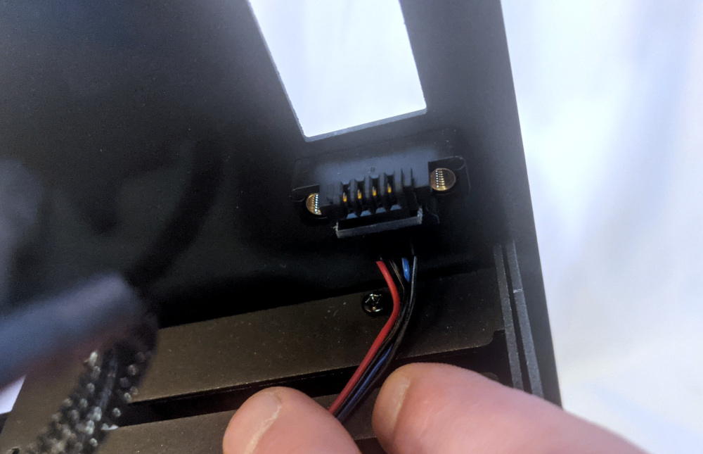
- The front power button receptacle should plug into the
PFPDport on the top Thelio-IO board, with the red wire on the bottom and the black wire on the top.

- The
PMBDport on the Thelio-IO board should connect to the headers on the bottom right corner of the motherboard, as shown below:

Steps to replace the power button:
- Follow the steps above to remove the top case.
- Follow the instructions in the Replace the Thelio Power Button support article.
Troubleshooting the Thelio-IO USB connection:
The Thelio-IO boards connect to the motherboard's USB headers for firmware updates and fan control within the host OS. If the fans seem to be stuck on full blast, check the Thelio-IO USB connections.
Tools required: Cross-head (Phillips) screwdriver (optional)
Time estimate: 10 minutes
Difficulty: Medium ●
Steps to check the USB wiring:
- Follow the steps above to remove the top case and remove the GPU brace. If a second GPU is installed, removing it will make it easier to access the connections on the motherboard.
- The Thelio-IO board has a
USB0port. The port connects to a cable (labeledUSB) with the red wire on the top.
Note: The fan and power button cables have been unplugged in this picture to make it easier to see the USB connector on Thelio-IO.
- The
USB0port on the Thelio-IO board should connect to the USB header in the center of the bottom edge of the motherboard, as shown below:
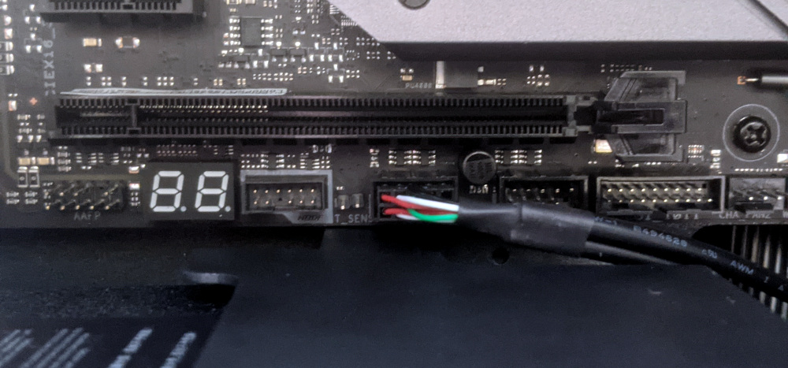